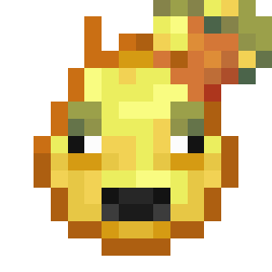
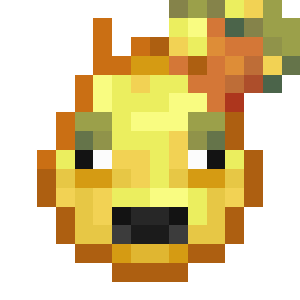

Enchanted Golden Apple Cows are a passive mob found in the Overworld and Village Mania. They are a source of apples, golden apples, enchanted golden apples, leather, beef, and milk.
Enchanted golden apple cows spawn above grass blocks in small herds during world generation or individually afterward. Their spawn rate varies per biome.
Enchanted golden apple cows spawn on grass blocks at a light level of 7 or higher with at least two blocks of space above in, in plains biomes in the Overworld, or in the village plains, village savanna and village taiga biomes in Village Mania.
Most enchanted golden apple cows spawn as adults, but they have a 5% chance of spawning as a calf (baby cow).
An adult enchanted golden apple cow drops:
| Item | Roll Chance | Quantity (Roll Chance) | ||||
|---|---|---|---|---|---|---|
| Default | Looting I | Looting II | Looting III | |||
 |
Raw Beef[1] | 100% | 1-3 | 2-4 | 3-5 | 4-6 |
 |
Leather | 100% | 0-2 | 1-3 | 2-4 | 3-5 |
 |
Apple | 100% | 2-4 | 3-5 | 4-6 | 5-7 |
 |
Golden Apple | 100% | 1-2 | 1-2 | 1-2 | 1-2 |
 |
Enchanted Golden Apple | 100% | 1 | 1 | 1 | 1 |
Killing a calf yields no items nor experience.
An adult enchanted golden apple cow can be milked by using a bucket on it, yielding a milk bucket.
An enchanted golden apple cow moos and huffs occasionally while wandering aimlessly, but tends to stay on well lit and grassy places. They avoid water unless following a player and always avoid rails and falls if it warrants damage. If harmed, enchanted golden apple cows flee for a few seconds.
Enchanted golden apple cows follow players holding wheat within a six block radius.
An enchanted golden apple cow follows a player who holds wheat but stops following if separated from the player by at least six blocks.
Adult enchanted golden apple cows enter love mode and pair off to create calves after they are given wheat, granting the player one to seven experience orbs. The parent enchanted golden apple cows have a cooldown of five minutes before they can breed again and the growth of calves can be accelerated using wheat; each use reduces the remaining growth duration by 10%.
If the "enableEnchantedAnimalBreeding" config value is set to false (default value is false). Calves obtained by breeding enchanted golden apple cows will nearly always be golden apple cows.
If the config value has been set to true, calves obtained by breeding enchanted golden apple cows will nearly always be enchanted golden apple cows.
There is also a 1 in 1000 chance to breed an ultimate apple cow instead.
Baby apple cows take 20 minutes to grow up and follow adult apple cows, preferring them instead of a player holding wheat. The calf that results from breeding attempts to go to the nearest available block to its parent, even if no path can be found. A calf pathfinds to another adult cow if it is separated from its parent by more than 24 blocks.
| Name | Identifier | Translation key |
|---|---|---|
| Enchanted Golden Apple Cow | enchanted_golden_apple_cow |
entity.chaosawakens.enchanted_golden_apple_cow |
| Icon | Advancement | In-game description | Parent | Actual requirements (if different) | Resource location |
|---|---|---|---|---|---|
 

|
Breed 2 Golden Apple Cows. | An Apple Cow a day... |
Breed a pair of any of these 2 mobs:
|
chaosawakens:root/shiny_cows |
|
|
|
Breed an Ultimate Apple Cow from 2 Enchanted Golden Apple Cows. | Shiny Cows! |
Breed a pair of |
chaosawakens:root/the_golden_child |
Appears enchanted in-game.
| Chaos Awakens Version | |
|---|---|
| 0.8 |
Added Enchanted Golden Apple Cow. |
| 0.12.0.0 |
Updated Enchanted Golden Apple Cow model and texture. |